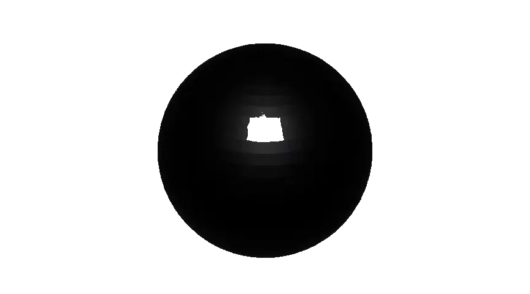
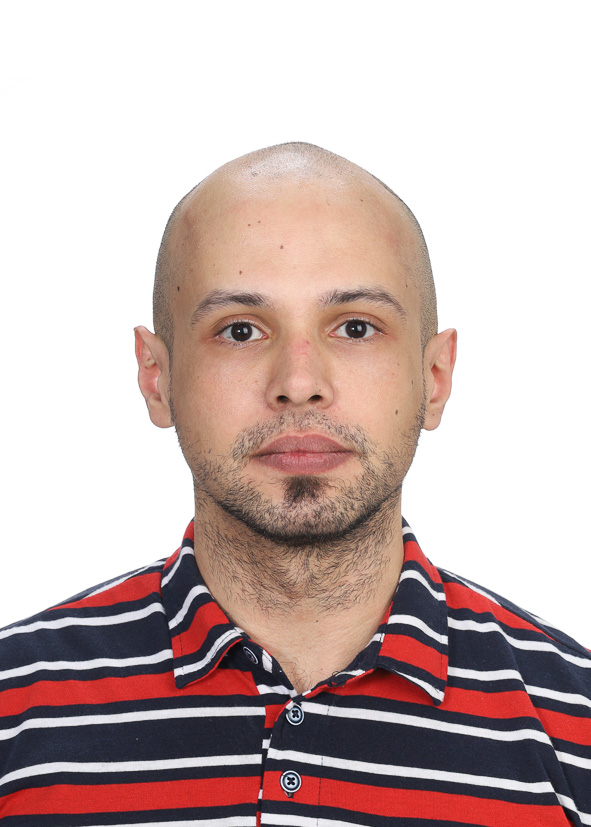

PhD in Chemical Engineering (University of Alberta, 2022). I design, instrument, and automate chemical engineering laboratories; mentor TAs; and help deliver hands‑on lab experiences across CPC courses.
My research spans distributed parameter systems (PDE‑based modelling and control), optimal/MPC, real‑time estimation, and SCADA/HMI implementations with PLCs, microcontrollers and web back‑ends. Recent work includes algae growth monitoring, natural circulation loops, phase‑change systems and rare minerals recovery.
Contact: ozorioca@ualberta.ca

Lab Technician, Computer Process Control Lab
University of Alberta — Edmonton, Alberta, Canada
2024–Present
Post-Doctoral Fellow
University of Alberta — Edmonton, Alberta, Canada
2022–2024
Python MATLAB C/C++ JavaScript HTML CSS Django LaTeX Jupyter/Colab
SCADA/HMI Arduino ESP32 Data Analysis AI/ML Blender